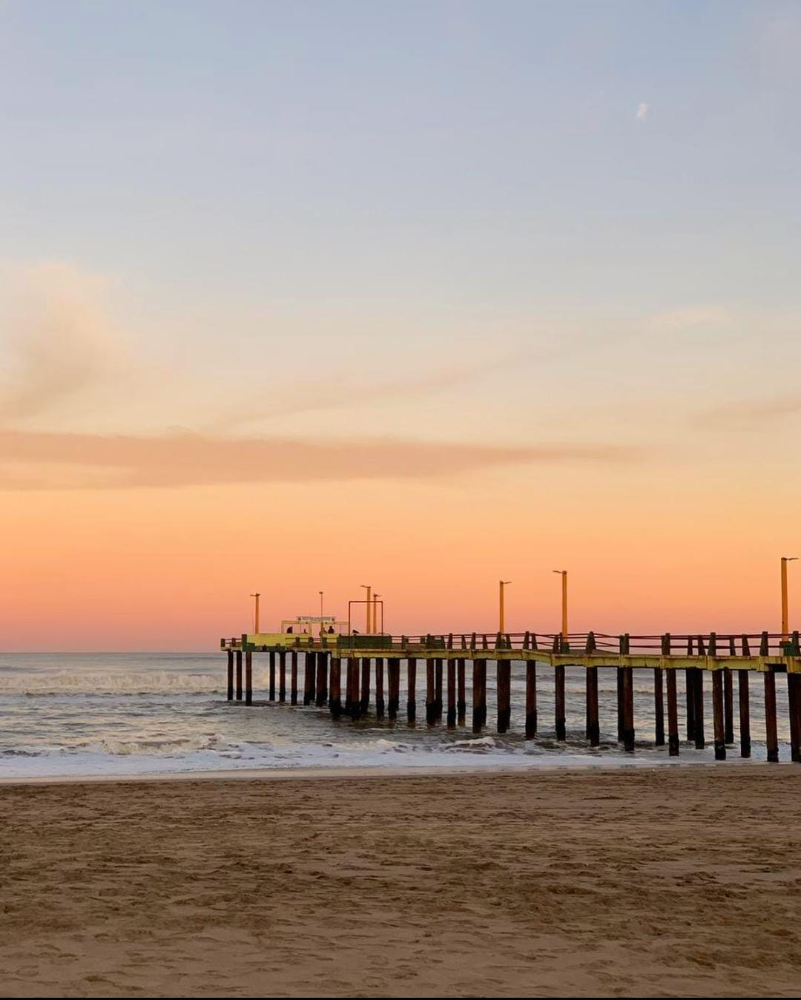
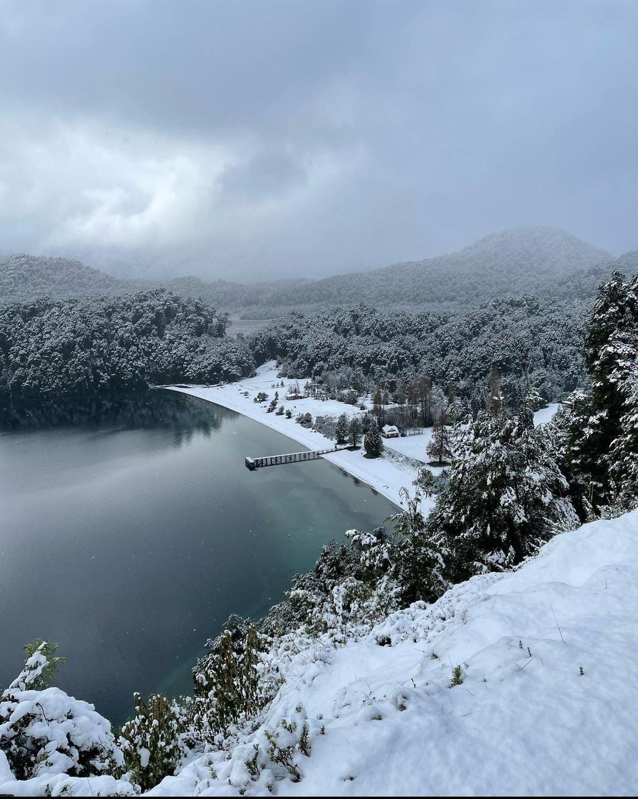
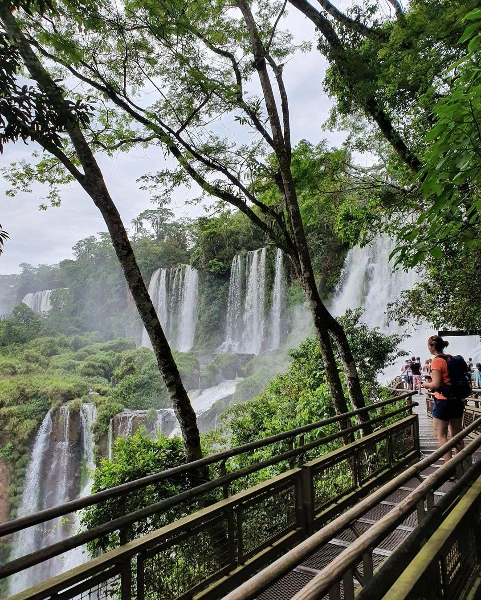
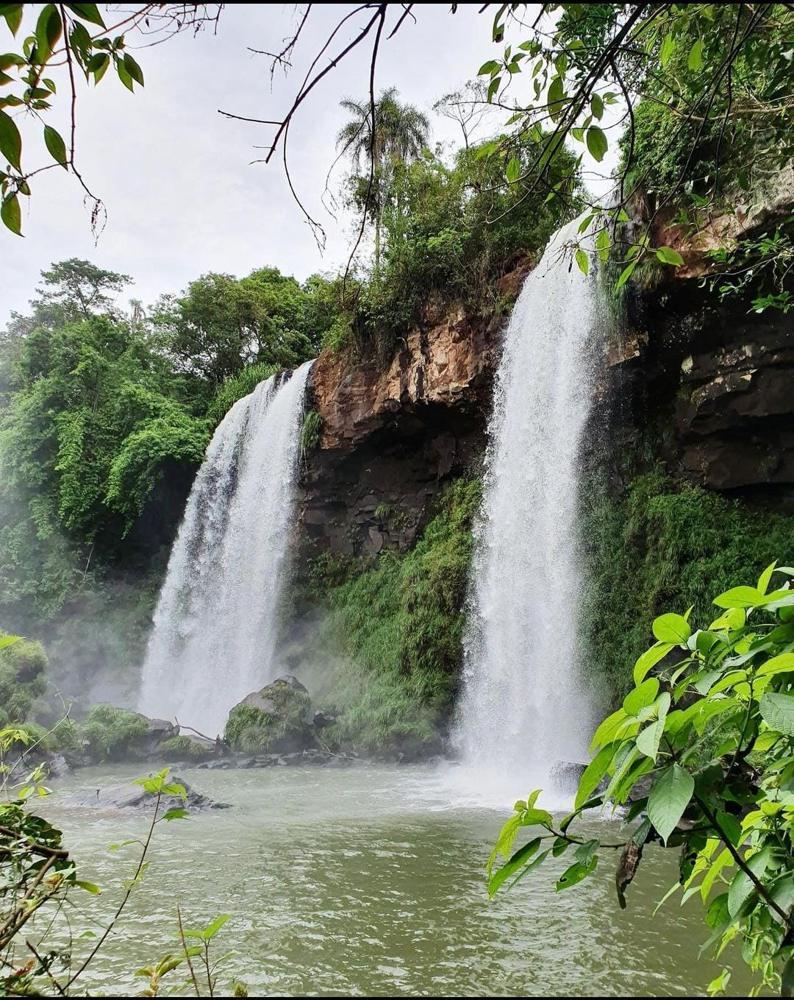
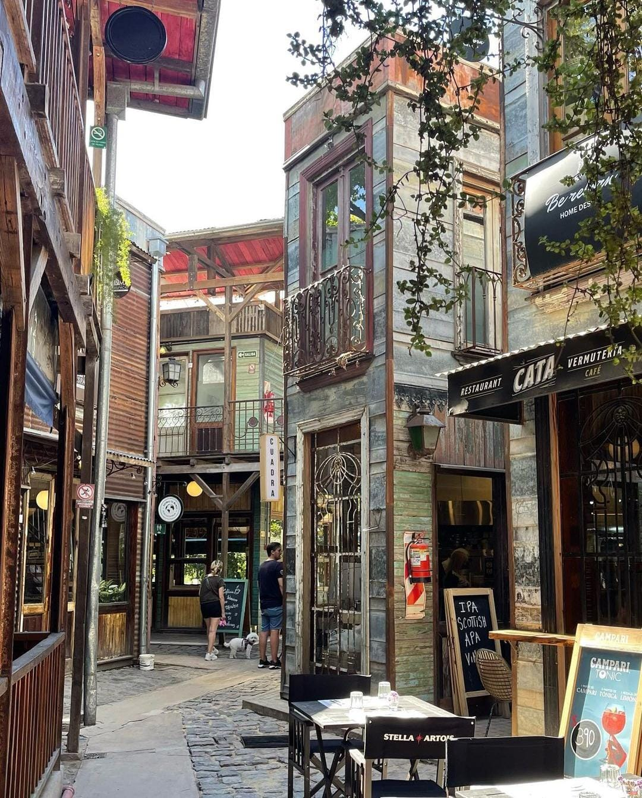

Escapadas.ar
Mostrando el mundo desde mi perspectiva
Viajar es más que unas vacaciones
En este vlog, nos sumergiremos en las maravillas de nuestro hermoso planeta, desde los destinos más icónicos hasta aquellos lugares ocultos que aún esperan ser descubiertos. Desde la vibrante energía de las ciudades hasta la serenidad de los paisajes naturales, juntos exploraremos lo mejor que el mundo tiene para ofrecer.
  Aventura visual
Acompáñame a través de la lente de mi cámara mientras capturamos la belleza de cada lugar, cada experiencia, y cada encuentro.

Nacimiento
Escapadas.ar nace de la necesidad de conocer que me brinda el país donde vivo que es Argentina, es tomar la valija e ir a conocer y sumergirme en cada destino al que voy.
